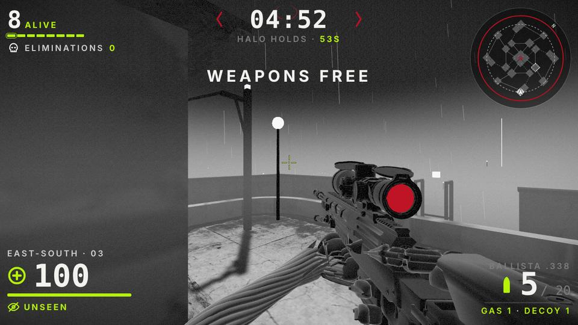
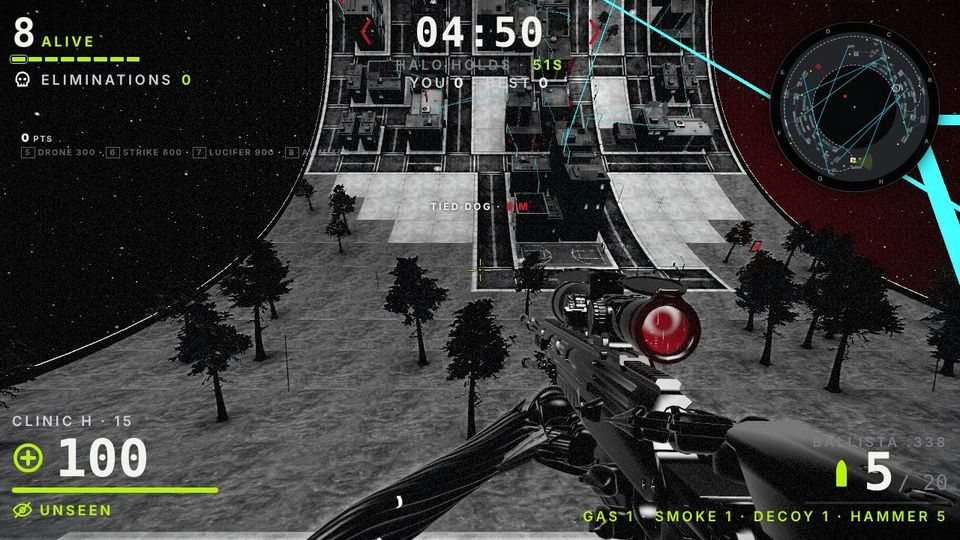
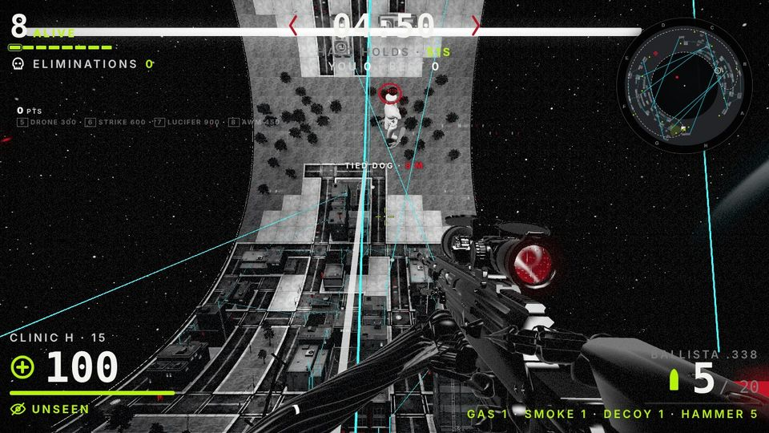
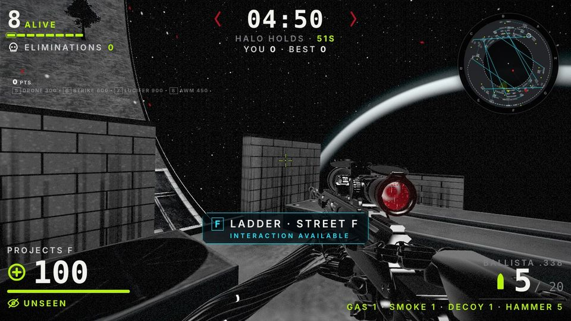
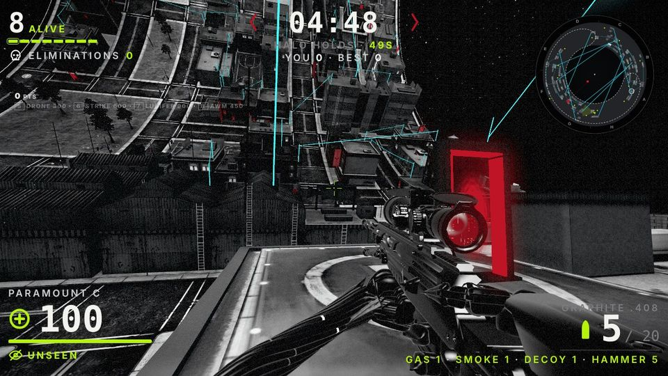
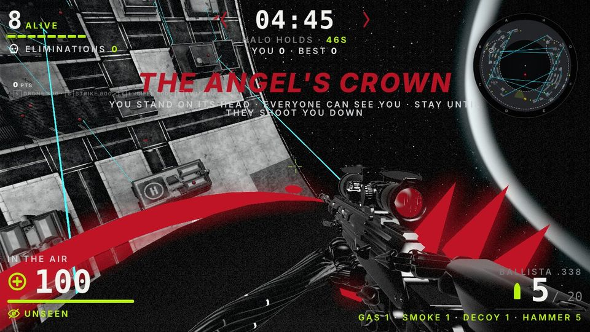

Sniper City maps
Sniper City has two maps: Hong Kong Rooftops and Loop City. Both hold eight snipers for a five-minute, last-one-alive match, and both can be played solo against bots or online with friends. You switch maps with the MAP button on the title screen. In an online room the host picks the map in the lobby.
| Hong Kong Rooftops | Loop City | |
|---|---|---|
| Shape | One flat city block | The inside of a ring, 640 metres round |
| The street | Falling to it kills you | Safe to walk, along with the park |
| Cover | Rooftop structures and fog | Adds concrete walls that break under fire |
| Teleport doors | 6 | 10 |
| Ways across | Launch pads, ziplines, ladders, alley jumps | Ziplines, ladders, launch pads, streets |
| Solo and online | Both | Both |
Hong Kong Rooftops
The first map is a single dense block of Hong Kong roofs in rain and fog, drawn in black and white with blood red. Neon signs hang off the buildings, air-conditioner fans turn, and traffic moves in the streets far below. Sight lines are long and the fog hides movement, so the red thread left by each shot is often the only way to find a sniper.
You cross between roofs by launch pad, zipline, ladder or a running jump over an alley. Miss the jump and the street kills you.

Loop City
Loop City is a city built on the inside of a ring. The ground curves upward in front of you and behind you, and if you look straight up you see the far side of the map hanging overhead, about 200 metres away. Walk in one direction for 640 metres and you arrive back where you started.

Shooting across the ring
Because the city wraps around, an enemy can be above you as well as beside you. A round fired up past the hub comes down on the opposite side of the ring, so a sniper on the far side of the map is a target, and so are you.

Breakable walls
Many Loop City rooftops have no parapet, so sections of concrete block wall stand along some edges. Tall sections hide a standing sniper and low ones hide a crouching one. They do not last: two rifle rounds or one rocket knock a section into rubble, and whoever was behind it is in the open.

Getting around
Cyan ziplines run between buildings and metal ladders climb the walls. Unlike Hong Kong Rooftops, the streets and the park are safe ground, which makes a street-level flank possible and leaves you exposed to every roof above.
Teleport doors
Black and red doors with a turning red portal stand on both maps: 6 on Hong Kong Rooftops and 10 on Loop City, placed far apart. Walk into one and you come out at a random safe spot somewhere else on the map. After a trip, doors ignore you for 4 seconds. In online matches the server chooses where you land.

The angel’s crown
About one door trip in twelve does not put you on a roof. It puts you on the crown of the angel that hangs over the city, 75 metres up. Everyone can see you there, and you stay until someone shoots you down. Only one sniper can hold the crown at a time, and stepping off the edge is a long fall.

Which map should you play first?
Start on Hong Kong Rooftops if you are new: it is flat and the fog forgives mistakes. Move to Loop City when you want threats from above, cover that breaks and longer shots.
Play Sniper City free